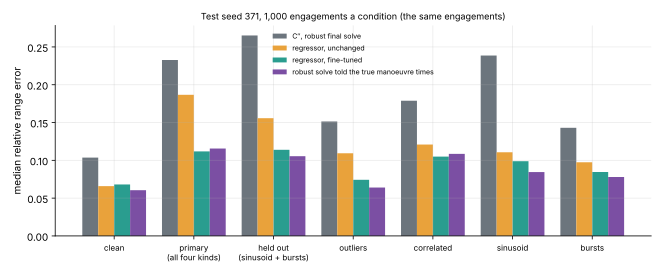
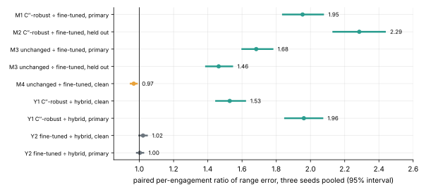
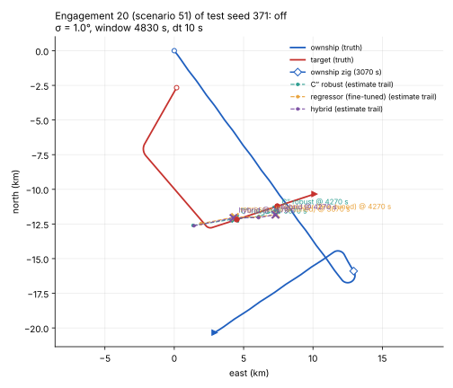
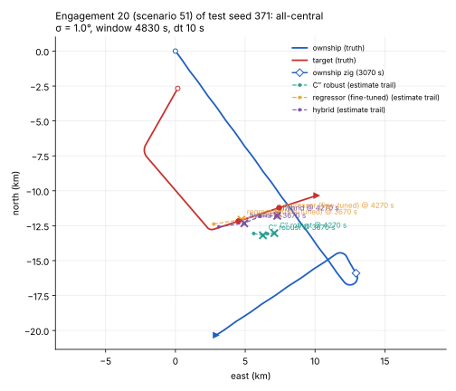
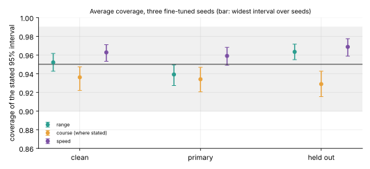

A learned regressor under bearing errors
Twice as good as our classical system, mostly because the classical segmenter breaks
2026-11-26 · spec 037 · gitma2 · a registered study, not a gate
Overview: the question
- Bearing errors that break the simulator's assumptions cost the classical real-time system (C″) a factor of 2.7. The classical remedy failed.
- Spec 012's regressor has no segmenter to break. It had never been scored under those errors.
- Three steps: score it unchanged; fine-tune it; pass its estimate through the physics layer.

Overview: what was registered first
- M1 to M4: against C″ with the robust solve, in and outside the training mix; the fine-tune's own effect; its cost on clean data.
- M5: do the model's stated 95% intervals cover?
- Y1, Y2: a hybrid (C″'s solve with the regressor as a prior) against C″ and against the regressor.
- Forecasts written before any fine-tuned seed existed. Test seed 371, 1,000 engagements a condition, scored once.
Range error by condition
Test seed 371. The fine-tuned regressor (green) sits beside the solve told the true manoeuvre times (purple). C″ (grey) is well above both.
The registered readings

Paired per engagement, three seeds pooled. Two forecasts were wrong: the intervals outside the mix, and the hybrid's range.
One engagement, clean

Engagement 20 (scenario 51), marks at 3,670 s and 4,270 s. All three systems are close. Chosen to show the mechanism; not a typical case.
The same engagement under the primary condition

C″ is fooled (28% range error); the regressor and the hybrid stay within 5%.
Stated intervals: coverage on average

Inside the registered band on all nine. Not slice by slice: course covers 0.79 shortly after a target change, 0.98 elsewhere.
What the panel narrowed
- A classical solve told the true manoeuvre times equals the regressor in range and beats it in course and speed. The factor of two is C's segmenter failing.
- Where C″'s segmentation holds: 1.15 to 1.43 in range, nothing in course or speed. On clean data the regressor is worse there in course and speed.
- "Held out" was chosen after looking, and lies inside what training covered in its statistics.
- Prior or bearings: still open. The static-prior comparator was too loose to test it.
- The hybrid is the regressor's range with a classical velocity refit.
Not achieved
- A classical control told what the regressor is told.
- A test on errors outside training's statistics.
- Intervals that hold slice by slice; nothing here is ready to show an operator.
- Readings by time since the last target change; the hybrid outside the mix.
- The three fine-tunes were interrupted at the provider's spend limit and resumed.
Next
- Recommended (the owner's choice): a prior-informed classical control and a decomposition of the gain into prior and bearings. CPU only, nothing trained.
- Then a conditional coverage study; only then the hybrid as a provisional candidate.
- No further GPU spending: about $46.75 of $50 is spent.
Write-up: /blog/2026/11/26/regressor-mismatch · Record: experiments/20261126-rmis · Figures: scripts/research/rmis_charts.py and tma2-plot, sidecars next to each SVG